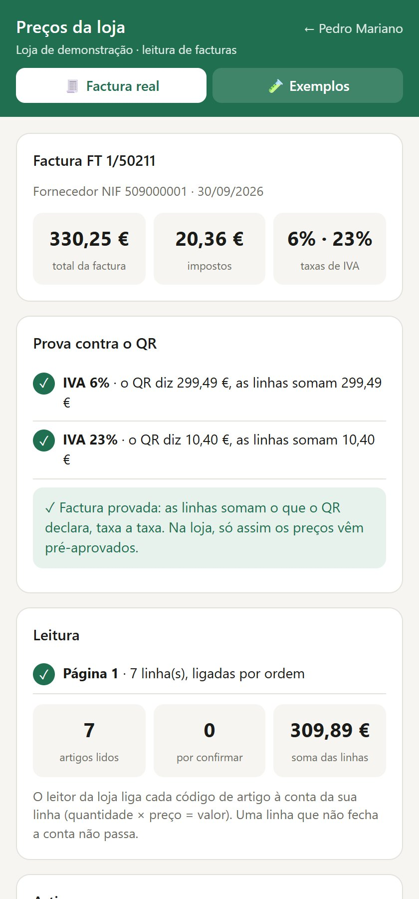

Invoice → Price
A family minimarket used to retype supplier invoices and work out new prices by hand. I built the system that reads the invoice photos, proves every line against the fiscal QR code and proposes new prices for a person to approve.
The problem
Prices fell behind costs, one invoice at a time.
The store buys from more than ten suppliers, and costs change every week. Each invoice had to be typed into the back-office (an MS Access database) and each shelf price recalculated, while the checkout runs on a separate SQL Server database. With no time to do it properly, some products ended up selling below cost.
The goal was not "read invoices with AI". It was: every cost in the system is the cost on the invoice, every price keeps the margin it should, and nothing changes without someone saying yes.
How it works
Six steps, each one checkable.
- ReadLocal OCR on the photos. In each row it looks for the three numbers where quantity × price = amount: the sum finds the columns on any invoice layout and proves the OCR did not swap a digit.
- ProveThe lines must add up to what the fiscal QR code declares, VAT rate by VAT rate, and to the running total carried from page to page.
- LinkEach line is tied to a product in the store: by confirmed links, by code, or by suggestions a person confirms.
- ProposeCost up: restore the usual margin of the product's family, rounded up to 5 cents. Cost down: keep the price and let the owner decide. Promotions and unusual cases go to a person.
- ApproveA phone app, protected by a PIN, where the invoice is photographed and each change is approved.
- WriteSimulate first and write only what was simulated: a verified backup, one transaction, an automatic stop if the product changed in the meantime, and a log to undo every change.
Why it can be trusted
The invoice proves the reading, not the other way round.
An invoice is proved only when three things hold at once: the sums per VAT rate match the QR code, no product code was left without a line, and no line was left without a code. Each condition alone can be fooled; together they would need two errors that cancel to the cent at every rate.
An unproved invoice is never thrown away and never trusted: it goes to a person with the reason ("the 23% lines are 27.64 € short", "the photo was taken from too far"). Prices only come pre-approved on a proved invoice.
Before going live I tested every pricing rule on real invoices with the owner, and two independent code audits went through the program. Each defect they found became a regression test, so it cannot come back.
A rule I learned the hard way
More lines is not the same as correct lines. An early version kept whichever reading found more rows; on one invoice that "won" four lines and broke the totals by 25 €. Since then, when two readings disagree, the QR code decides.
The live demo
The store's reader, running in your browser.
The demo uses the same OCR models as the store (PaddleOCR PP-OCRv4, in WebAssembly) and the store program's own Python modules, run by Pyodide: the line reader, the QR reader and the proof. Nothing is uploaded; the photo never leaves the phone.

The demo with a synthetic test invoice: both VAT rates match the QR code, so the invoice is proved.
Two things differ from the store, both because of the OCR engine. The browser has no model to flatten a curved page, so each page is read once instead of twice. And the browser's text detector sometimes keeps a whole table row in one box, so the invoice is read both ways and the QR code picks the reading it proves.
Tested on real supplier invoices photographed at the store:
| Invoice | Photos | Lines read | Result |
|---|---|---|---|
| Cash & carry, groceries | 3 pages | 32 of 32 | Proved at 6% and 23% |
| Cash & carry, tobacco | 1 | 1 of 1 | Proved (not subject to VAT) |
| Lighting supplier, photo taken sideways | 1 | 5 of 5 | Proved at 23% |
| Sweets distributor, photo from far away | 1 | 6 of 10 | Not proved: asks for a closer photo |
The last one is the system doing its job: it does not guess the four lines it could not read.
Built with
- Python
- PowerShell
- MS Access (Jet)
- SQL Server
- RapidOCR / PaddleOCR
- Fiscal QR (Portaria 195/2020)
- pytest
- Pyodide
- WebAssembly
The public repository precos-loja has the store program's code (in Portuguese), without the store's data. The English demo rewrites the core ideas on a synthetic store, with 22 tests, a Power BI model and an n8n workflow.